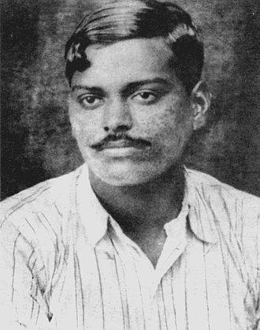

Mohandas Karamchand Gandhi (ISO: Mōhanadāsa Karamacaṁda Gāṁdhī[pron 1]; 2 October 1869 – 30 January 1948) was an Indian lawyer, anti-colonial nationalist and political ethicist who employed nonviolent resistance to lead the successful campaign for India's independence from British rule. He inspired movements for civil rights and freedom across the world. The honorific Mahātmā (from Sanskrit 'great-souled, venerable'), first applied to him in South Africa in 1914, is now used throughout the world.

Bal Gangadhar Tilak (pronunciationⓘ; born Keshav Gangadhar Tilak[3][4] (pronunciation: [keʃəʋ ɡəŋɡaːd̪ʱəɾ ʈiɭək]); 23 July 1856 – 1 August 1920), endeared as Lokmanya (IAST: Lokamānya), was an Indian nationalist, teacher, and an independence activist. He was one third of the Lal Bal Pal triumvirate.[5] The British colonial authorities called him "The father of the Indian unrest". He was also conferred with the title of "Lokmanya", which means "accepted by the people as their leader".[6] Mahatma Gandhi called him "The Maker of Modern India".[7]

Subhas Chandra Bose (/ʃʊbˈhɑːs ˈtʃʌndrə ˈboʊs/ ⓘ shuub-HAHSS CHUN-drə BOHSS;[12] 23 January 1897 – 18 August 1945) was an Indian nationalist whose defiance of British authority in India made him a hero among many Indians, but his wartime alliances with Nazi Germany and Imperial Japan left a legacy vexed by authoritarianism, anti-Semitism, and military failure. The honorific Netaji (Bengali: "Respected Leader") was first applied to Bose in Germany in early 1942—by the Indian soldiers of the Indische Legion and by the German and Indian officials in the Special Bureau for India in Berlin. It is now used throughout India.[h]

Bhagat Singh (28 September 1907[1] – 23 March 1931) was an Indian revolutionary[3] who participated in the mistaken murder of a junior British police officer[4] in what was to be retaliation for the death of an Indian nationalist.[5] He later took part in a largely symbolic bombing of the Central Legislative Assembly in Delhi and a hunger strike in jail, which—on the back of sympathetic coverage in Indian-owned newspapers—turned him into a household name in the Punjab region, and after his execution at age 23 into a martyr and folk hero in Northern India.[6] Borrowing ideas from Bolshevism and anarchism,[7] he electrified a growing militancy in India in the 1930s, and prompted urgent introspection within the Indian National Congress's nonviolent but eventually successful campaign for India's independence.[8] Modern historian and scholars have described Singh's leadership of the movement as charismatic.[9]

Vallabhbhai Jhaverbhai Patel (Gujarati: [ʋəlːəbːʰɑi dʒʰəʋeɾbʰɑi pəʈel]; ISO: Vallabhabhāī Jhāvērabhāī Paṭēla; 31 October 1875 – 15 December 1950), commonly known as Sardar Vallabhbhai Patel,[a] was an Indian independence nationalist and barrister who served as the first Deputy Prime Minister and Home Minister of India from 1947 to 1950. He was a senior leader of the Indian National Congress, who played a significant role in the country's struggle for independence and its political integration.[1] In India and elsewhere, he was often called Sardar, meaning "Chief" in Hindi, Urdu, Bengali and Persian. He acted as the Home Minister during the political integration of India and the Indo-Pakistani War of 1947.

Chandra Shekhar Sitaram Tiwari (pronunciationⓘ;[2] 23 July 1906 – 27 February 1931), popularly known as Chandra Shekhar Azad, was an Indian revolutionary who reorganised the Hindustan Republican Association (HRA) under its new name of Hindustan Socialist Republican Association (HSRA) after the death of its founder, Ram Prasad Bismil, and three other prominent party leaders, Roshan Singh, Rajendra Nath Lahiri and Ashfaqulla Khan. He hailed from Bardarka village in Unnao district of United Provinces and his parents were Sitaram Tiwari and Jagrani Devi. He often used the pseudonym "Balraj" while signing pamphlets issued as the commander-in-chief of the HSRA.[3]
